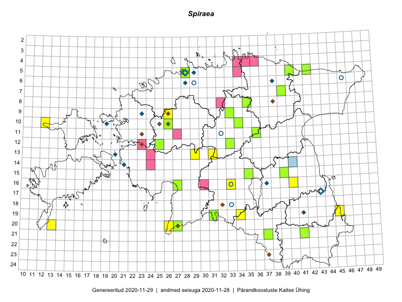

Spiraea — enelas
Rosaceae :: Spiraea (63)

Kaart põhineb 92 kirjel:
vaatlusi 20
herbaareksemplare 43
PKÜ kirjeid1 29
Taime kaasaegsed ja ajaloolised leiukohad asuvad 53 ruudus.
Tingmärgid ja ruutude arvud periooditi (U2 / V3 )
█ 2006–2020 (34/–)
◆/◇ 1971–2005 (17/0)
○ 1921–1970 (7/0)
+ kuni 1920 (0/0)
× hävinud (–/0)
? kaheldav (–/0)
| Ruut | Leidja(d) | Leiuaeg | Kirje |
|---|---|---|---|
| 06-38 | H. Krall | 1971-09–1979-09 | ruut/ala: Spiraea |
| 06-29 | H. Salasoo, J. Eplik | 1936-06–1938 | ruut/ala: Spiraea |
| 10-19 | Toomas Kukk, Elle Roosaluste, Mare Leis, Thea Kull | 1993-06–1998-09-21 | ruut/ala: Spiraea |
| 10-12 | Eeva-Maria Jeletsky, Tarmo Niitla | 2015-06-26 | ruut/ala: Spiraea |
| 13-29 | Liina Oja, Ott Luuk | 2015-05-09 | ruut/ala: Spiraea |
| 16-33 | Maria Abakumova | 2015-06-09 | ruut/ala: Spiraea |
| 07-39 | Kaili Orav, Silvia Pihu | 2015-06-17 | ruut/ala: Spiraea |
| 19-31 | Ott Luuk, Indrek Tammekänd | 2015-05-22 | ruut/ala: Spiraea |
| 19-45 | Meeli Mesipuu, Thea Kull | 2015-08-19 | ruut/ala: Spiraea |
| 20-13 | Oliver Parrest, Mari Reitalu | 2015-05-26 | ruut/ala: Spiraea |
| 20-26 | Meeli Mesipuu, Thea Kull | 2016-04-28 | ruut/ala: Spiraea |
| 19-34 | Silvia Pihu, Illi Tarmu | 2015-07-11 | ruut/ala: Spiraea |
| 19-34 | Silvia Pihu, Illi Tarmu | 2015-07-11 | ruut/ala: Spiraea |
| 19-34 | Silvia Pihu, Illi Tarmu | 2015-07-11 | ruut/ala: Spiraea |
| 21-37 | Silvia Pihu | 2015-06-28 | ruut/ala: Spiraea |
| 21-37 | Silvia Pihu | 2015-06-28 | ruut/ala: Spiraea |
| 13-31 | Oliver Parrest, Toivo Sepp | 2016-07-21 | ruut/ala: Spiraea |
| 09-26 | Tõnu Ploompuu | 2015-05-20 | ruut/ala: Spiraea |
| 16-40 | Meeli Mesipuu | 2017-07-30 | ruut/ala: Spiraea |
| 05-28 | Meeli Mesipuu | 2019-06-30 | ruut/ala: Spiraea |
| 17-43 | Helga Tamm | 1957-06-04 | TAA0016507: Spiraea |
| 09-23 | Toomas Kukk | 2000-07-28 | TAA0016508: Spiraea |
| 09-23 | Toomas Kukk | 2000-07-28 | TAA0016509: Spiraea |
| 09-23 | Toomas Kukk | 2000-07-28 | TAA0016510: Spiraea |
| 19-41 | Toomas Kukk | 2005-10-19 | TAA0016511: Spiraea |
| 13-20 | Toomas Kukk | 1999-06-16 | TAA0016512: Spiraea |
| 13-20 | Toomas Kukk | 1999-06-16 | TAA0016513: Spiraea |
| 14-21 | Toomas Kukk | 2005-06-28 | TAA0016514: Spiraea |
| 14-21 | Toomas Kukk | 2005-06-28 | TAA0016515: Spiraea |
| 14-21 | Toomas Kukk | 2005-06-28 | TAA0016516: Spiraea |
| 16-37 | Toomas Kukk | 2004-11-12 | TAA0016518: Spiraea |
| 16-37 | Toomas Kukk | 2004-11-12 | TAA0016519: Spiraea |
| 16-37 | Toomas Kukk | 2004-11-12 | TAA0016520: Spiraea |
| 16-37 | Toomas Kukk | 2004-11-12 | TAA0016521: Spiraea |
| 06-46 | 1929-07-25 | TAA0016527: Spiraea | |
| 18-33 | Aleksei Paivel | 1961-06-08 | TALL A007428: Spiraea |
| 17-43 | Aleksei Paivel | 1961-08-10 | TALL A007347: Spiraea |
| 17-43 | Jüri Elliku | 1985-07-04 | TALL A007346: Spiraea |
| 17-43 | Aleksei Paivel | 1961-08-10 | TALL A007314: Spiraea |
| 11-32 | Aleksei Paivel | 1962-06-23 | TALL A007311: Spiraea |
| 05-28 | E. Peikel | 1951-06-27 | TAM0026983: Spiraea |
| 05-28 | E. Peikel | 1951-06-27 | TAM0026984: Spiraea |
| 15-39 | Peedu Saar | 2015-07-15 | TAA0116636: Spiraea |
| 10-34 | Peedu Saar, Liina Oja | 2015-06-08 | TAA0116637: Spiraea |
| 08-35 | Jana-Maria Habicht | 2015-07-15 | TAM0118107: Spiraea |
| 09-33 | Jana-Maria Habicht | 2015-05-30 | TAM0118108: Spiraea |
| 05-42 | Kaili Orav, Silvia Pihu | 2015-06-18 | TAA0135441: Spiraea |
| 07-39 | Kaili Orav, Silvia Pihu | 2015-06-17 | TAA0135444: Spiraea |
| 21-37 | Silvia Pihu | 2015-06-28 | TAA0134870: Spiraea |
| 11-36 | Illi Tarmu, Ülle Jõgar, Kai Rünk | 2015-07-24 | TAA0118893: Spiraea |
| 12-33 | Indrek Tammekänd, Toomas Kukk | 2015-05-10 | TAA0115979: Spiraea |
| 16-27 | Indrek Tammekänd | 2016-07-06 | TAA0139791: Spiraea |
| 05-28 | Erkki Otsman, Sergei Smirnov | 2015-06-26 | TAA0140331: Spiraea |
| 19-31 | Ott Luuk, Indrek Tammekänd | 2015-05-22 | TAA0139169: Spiraea |
| 16-27 | Indrek Tammekänd | 2017-07-29 | TAA0143397: Spiraea |
| 12-25 | Peedu Saar | 2018-08-17 | TAA0145927: Spiraea |
| 10-26 | Ott Luuk | 2014-06-11 | TAA0147370: Spiraea |
| 11-36 | Peedu Saar | 2019-08-10 | TAA0149691: Spiraea |
| 15-35 | Meeli Mesipuu, Timo Luhamäe | 2019-08-27 | TAA0149856: Spiraea |
| 05-40 | Ott Luuk, Peedu Saar | 2019-07-05 | TAA0151475: Spiraea |
| 21-41 | Toomas Kukk, Indrek Tammekänd | 2019-07-10 | TAA0148899: Spiraea |
| 21-41 | Toomas Kukk, Indrek Tammekänd | 2019-07-10 | TAA0148900: Spiraea |
| 16-33 | 1928-07-27 | TAA0016526: Spiraea | |
| 14-24 | 2006-06-06 | PKÜ: 12398 | |
| 13-24 | 2006-06-06 | PKÜ: 12416 | |
| 12-23 | 1999-08-31 | PKÜ: 153 | |
| 18-32 | 2000-11-15 | PKÜ: 3373 | |
| 08-32 | 2009-09-27 | PKÜ: 15845 | |
| 04-35 | 2011-07-12 | PKÜ: 17216 | |
| 04-35 | 2011-07-28 | PKÜ: 17158 | |
| 11-23 | 1999-08-29 | PKÜ: 198 | |
| 04-35 | 2011-07-12 | PKÜ: 17217 | |
| 04-34 | 2010-08-02 | PKÜ: 16520 | |
| 09-26 | 2002-08-20 | PKÜ: 9673 | |
| 20-27 | 2003-08-17 | PKÜ: 11321 | |
| 14-24 | 2006-06-06 | PKÜ: 12500 | |
| 10-26 | 2002-06-03 | PKÜ: 8691 | |
| 14-24 | 2006-06-06 | PKÜ: 12400 | |
| 05-34 | 2010-07-04 | PKÜ: 16341 | |
| 09-26 | 2002-08-20 | PKÜ: 9671 | |
| 04-35 | 2011-07-12 | PKÜ: 17173 | |
| 05-34 | 2010-07-10 | PKÜ: 16426 | |
| 04-35 | 2011-07-14 | PKÜ: 17187 | |
| 04-35 | 2006-08-10 | PKÜ: 13597 | |
| 08-38 | 2000-09-07 | PKÜ: 6869 | |
| 04-34 | 2011-07-24 | PKÜ: 16821 | |
| 04-35 | 2011-07-23 | PKÜ: 16824 | |
| 23-37 | 2002-09-01 | PKÜ: 9903 | |
| 10-25 | 2001-07-12 | PKÜ: 7049 | |
| 04-34 | 2011-08-06 | PKÜ: 16921 | |
| 20-27 | 2003-08-17 | PKÜ: 11331 | |
| 04-36 | 2011-06-28 | PKÜ: 17111 |
Pärandkoosluste Kaitse Ühingu (PKÜ) andmebaas sisaldab inventeeritud koosluste kirjeldusi ja liigiloendeid. Kõige enam on andmeid niidutaimede kohta.↩︎
Ruutude arv uue atlase andmekogu järgi. Muuhulgas arvestab vanemat herbaariumi, 2005. aasta atlase välitöölehtedelt uuesti digitaliseeritud andmeid jne. Uue atlase andmekogust pärinevad andmed on kaardile kantud siniste sümbolitega.↩︎
Ruutude arv 2005. aasta atlase (Kukk, T., Kull, T., Eesti taimede levikuatlas. Eesti Maaülikool, Põllumajandus- ja Keskkonnainstituut, Tartu, 2005) järgi. Andmeallikana on kasutatud levik.exe programmi, kus igas ruudus on registreeritud vaid uusim leid. Seetõttu on vanemate perioodide kohta andmed puudulikud. Kasutatud levik.exe andmestikus leidub mõningaid kõrvalekaldeid atlase trükis ilmunud versioonist, sagedamini tarnade ja käpaliste seas. Lisaks leidub selles andmestikus valik liike (peamiselt väheste leidudega tulnuktaimed), mille kaarte trükis ei avaldatud. Vana atlase andmed ruutudest, milles ei ole uue atlase andmekogus leide enne 2006. aastat, on kaardil esitatud punaste sümbolitega. Vana atlase andmetel hävinud ja kaheldavaid leiukohti pole hilisemate (taas)leidude põhjal korrigeeritud.↩︎